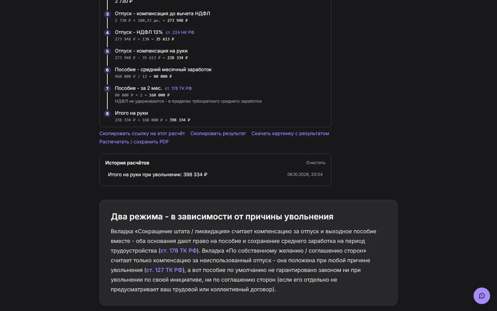
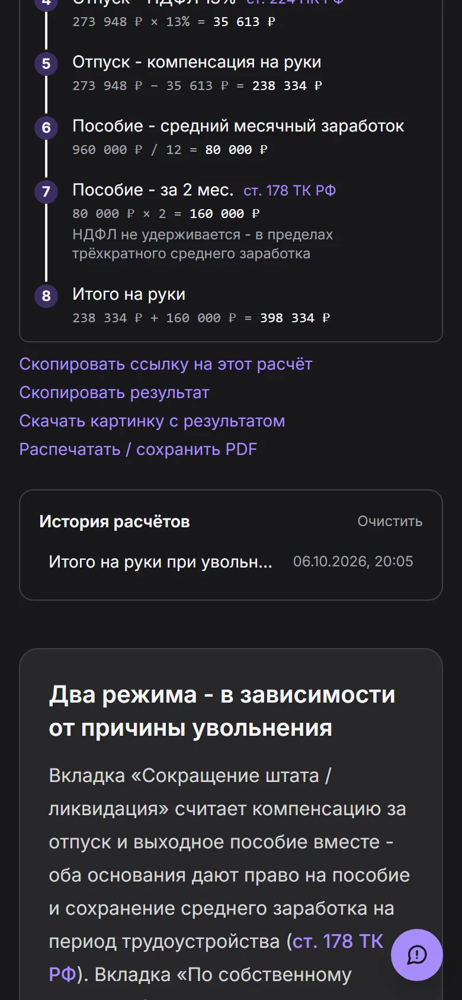

Итого на руки
398 334 ₽
Собственный проект · 2026
ТочныйРасчёт
Калькуляторы выплат и налогов по нормам 2026 года. Всё считается на странице сразу, без кнопки «Рассчитать», а каждая цифра разбирается по шагам со ссылкой на статью закона.
17калькуляторов, у каждого своя страница
6категорий: от НДФЛ до ипотеки
9ползунков «а если...» с пересчётом на лету
3статьи в блоге про сокращение, декрет и самозанятость
01
От приёма на работу до увольнения
Так работает сценарий «Выплаты при увольнении». Это настоящие формулы проекта: двигайте даты и ползунки, листок пересчитывается сразу.
Уволен
27 августа 2026
02
Каждая цифра с объяснением
Под любым расчётом на сайте раскрывается разбор: формула с подставленными числами и ссылка на статью закона. Так видно, откуда взялась сумма, и можно проверить её самому.
- 1Формула с вашими числамиНе «получилось столько-то», а «273 948 ₽ × 13% = 35 613 ₽».
- 2Ссылка на статьюРядом с шагом стоит норма ТК или НК РФ, на которой он держится.
- 3Результат можно унести с собойСкопировать ссылку на расчёт, скопировать итог текстом, скачать картинку или сохранить в PDF.
- 4История и общий профильРасчёты и зарплата запоминаются в самом браузере, аккаунт не нужен.


03
Семнадцать калькуляторов в шести категориях
Отдельные страницы под отдельные запросы, а рядом сценарии, которые тянут расчёт через несколько шагов.
Зарплата и налоги3
- НДФЛ
- Оклад по зарплате на руки
- Трудовой договор или самозанятость
Отпуска и увольнение4
- Отпускные
- Компенсация за отпуск
- Выходное пособие
- Выплаты при увольнениисценарий
Больничные и пособия2
- Больничный
- Больничный по уходу за ребёнком
Семья и дети4
- Алименты
- Декретные
- Выплаты в декретесценарий
- Детские вычеты
Долги и штрафы3
- Пени
- Исполнительский сбор
- Штраф ГИБДД со скидкой
Ипотека1
- Досрочное погашение и вычет по процентам
04
Те же страницы на ПК, планшете и телефоне
Страницы целиком, как их видит посетитель. Выберите страницу и размер экрана, листайте прямо в рамке.

05
Как это сделано
Только то, что есть в коде проекта.
- Каркас
- Next.js 16 (App Router), React 19, TypeScript. Страницы собираются заранее, поэтому открываются мгновенно.
- Стили
- Tailwind CSS 4, тёмная и светлая темы, шрифт Inter.
- Расчёты
- Чистые функции без привязки к экрану. Одни и те же формулы работают в форме, в примере на странице и в проверочных скриптах.
- Формы
- Один общий компонент для всех калькуляторов: поля, проверка, пересчёт на лету, разбор по шагам, история, ссылка на расчёт, картинка и PDF.
- Данные
- История расчётов и профиль хранятся только в браузере. Аккаунта и базы данных нет.
- Поиск
- У каждого калькулятора свой адрес, описание, картинка для превью и запись в карте сайта.
- Обратная связь
- Кнопка «Сообщить об ошибке» в углу каждой страницы. Это единственный серверный маршрут: письмо уходит через nodemailer.
06
Как дорабатывалось
Сценарий увольнения переписывался несколько раз. Каждый раз причиной было замечание при проверке вручную.
-
1
Где сценарий, где я ставлю дату трудоустройства, дату увольнения и зарплату?
Первая версия принимала суммы руками. Добавил в общий компонент поле «дата», и полные месяцы стали считаться по датам.
-
2
А как же увольнение по собственному желанию?
Пособие при таком увольнении не гарантировано, а форма считала его всегда. Появился переключатель причины, во второй вкладке считается только компенсация за отпуск.
-
3
А если я три года не брал отпуск?
Это оказалась реальная ошибка: расчёт копил не больше 12 месяцев, хотя неиспользованные дни не сгорают. Исправил формулу и нашёл тот же предел в соседнем калькуляторе.
-
4
Проверить весь сайт на ошибки.
Нашлось шесть багов, среди них меню на телефоне, уезжавшее за край экрана, и неверное число в примере на странице. Формулы старых калькуляторов прогнал скриптом против их собственных примеров: цифры сошлись.
-
5
Три новые функции получились не такими.
Печать, общий дашборд и генератор заявлений я убрал целиком и сделал заново по-другому. Сегодняшние «Мои расчёты» и сохранение в PDF появились уже после этого.
Нужен сервис, где цифры можно проверить?
Напишите, что нужно считать и по каким правилам. Отвечу, как это собрать и за какое время.